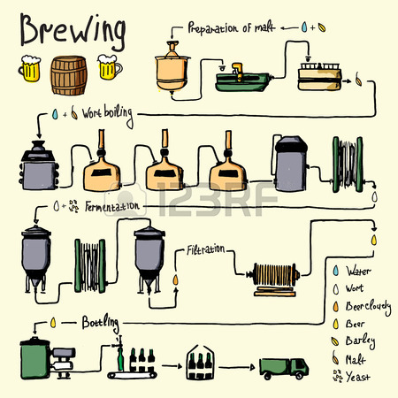

Image credit: 123RF
Equipment Needed
Boil Pot with spigot
Mash Tun with spigot
Carboys
Wort Chiller
Tubing
Thermometer
Sanitizer
Ingredients
US 2 Row 9.25 lbs
Crystal 60°L 12 oz.
Galena Hops .5 oz.
Cascade Hops 2 oz.
Centennial Hops 1 oz.
White Labs Pacific Ale WLP041
Instructions
Thoroughly sanitize all equipment before starting and after using.
Heat 6 gallons of water to 165°F and add to the mash tun.
Add all grains to the mash tun and cover to steep at 155° for 1 hour to create wort.
Drain the mash tun of wort into your boil pot, making sure to keep all grain sediment in the tun.
Boil the wort for one hour and add hops at the following increments from the end of the boil:
-
Galena, .5 oz. 60 min.
-
Cascade, .5 oz. 30 min.
-
Centennial, .5 oz. 10 min.
-
Cascade, .5 oz. 5 min.
Chill your wort to about 76°F.
Transfer the wort into your primary fermentation carboy and pitch yeast. Let it ferment in a dark place.
After a week of fermentation in the primary, transfer beer into secondary fermentation carboy and add remaining hops.
After another week, add conditioning sugar, then bottle beer.
Leave alone for two weeks while beer conditions.